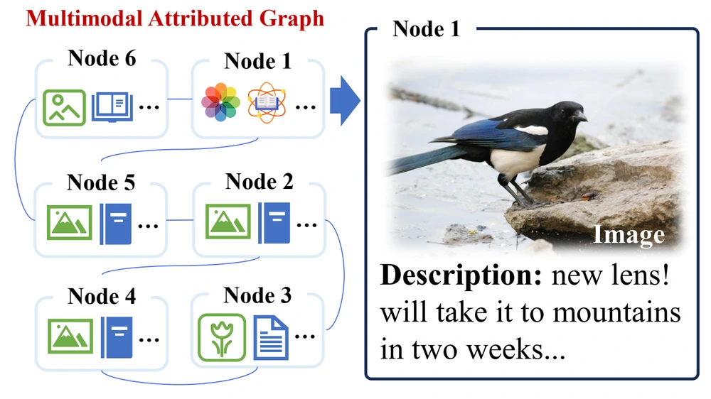

View figureMAGB
When Graph Meets Multimodal: Benchmarking and Meditating on Multimodal Attributed Graph Learning
KDD 2025CCF-A
Introduces five multimodal graph datasets and a unified comparison of GNN- and VLM-based predictors, examining the effects of domain, modality imbalance, and graph retrieval.